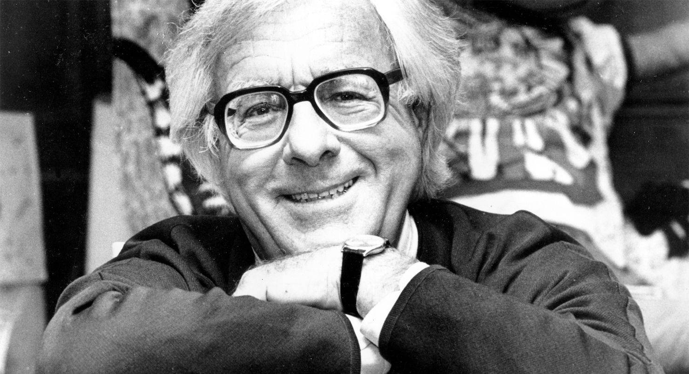

Рей Бредбері
Батько фантастичної літератури.

Рей Бредбері – один із найвідоміших і найвпливовіших письменників-фантастів XX століття. Він написав понад 400 оповідань, 12 романів, кілька п'єс і сценаріїв. Його твори перекладені більш ніж 80 мовами.
Деякі факти про Бредбері
- Бредбері народився в штаті Іллінойс у 1920 році. Він почав писати в ранньому віці, і його перше оповідання було опубліковане в 1938 році. У 1950-х роках він став одним із найпопулярніших письменників-фантастів у США. Його романи «451 градус за Фаренгейтом» (1953) і «Марсіанська хроніка» (1950) стали класикою жанру.
- Бредбері був одним із перших письменників-фантастів, який почав замислюватися про соціальні та політичні наслідки науково-технічного прогресу. Його твори часто містять критику тоталітаризму, споживацтва та війни. Бредбері також був одним із перших письменників-фантастів, який почав використовувати магію та містику в своїх творах.
- Він був одним із перших письменників-фантастів, який почав замислюватися про соціальні та політичні наслідки науково-технічного прогресу.
- Його твори часто містять критику тоталітаризму, споживацтва та війни.
- Він був одним із перших письменників-фантастів, який почав використовувати магію та містику в своїх творах.
- Творчість Рея Бредбері справила величезний вплив на розвиток фантастичної літератури. Його роботи надихнули багатьох інших письменників, а його ідеї стали частиною поп-культури. Бредбері помер у 2012 році у віці 91 року.
"Уявіть себе світом, де кожен може читати і писати! Це було б суспільство, де всі були б рівними, де всі мали б доступ до інформації, де всі могли б висловлювати свої думки. Це було б суспільство, де кожен міг би мріяти."
"451 градус за Фаренгейтом"
Ви можете більше дізнатись про цю неймовірну людину на Wikipedia